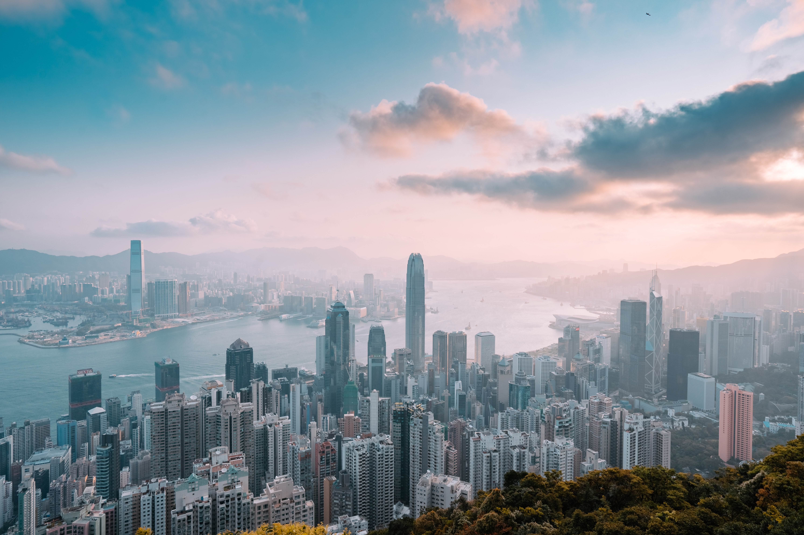
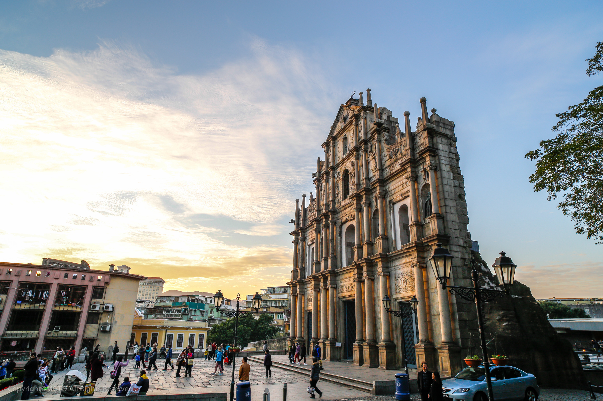
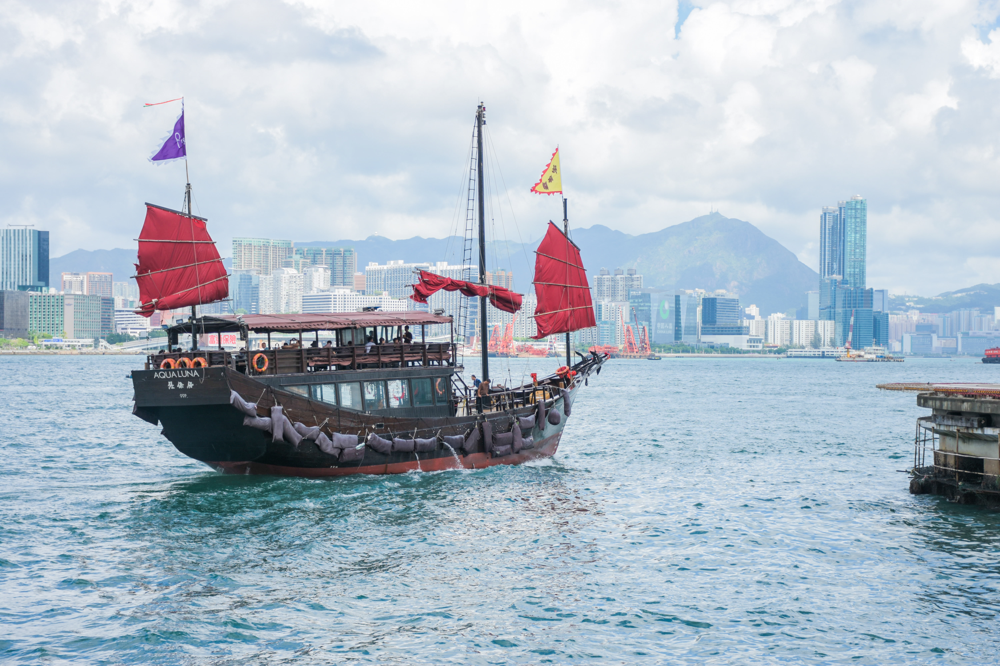
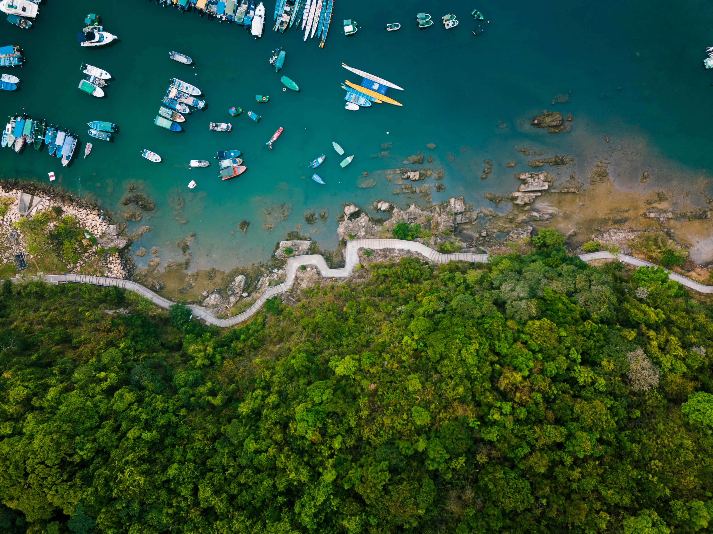

EXPLORE HONG KONG

DIM SUM
Dim sum is a style of Chinese cuisine prepared as small bite-sized portions of food served in small steamer baskets or on small plates. Dim sum dishes are usually served with tea and together form a full tea brunch. Dim sum traditionally are served as fully cooked, ready-to-serve dishes.

VICTORIA
PEAK
PEAK
Victoria Peak is a mountain on the western half of Hong Kong Island. It is also known as Mount Austin, and locally as The Peak. The highest point on Hong Kong Island at 1,811 feet tall, this historic mountain provides 360-degree views of the city's impenetrable skyline.

MACAU
Known as the 'Vegas of China', Macau is indeed an epicentre of gambling and glitz. While luxury entertainment here is world-class, the city has much more to offer than that. Macau was a Portuguese colony for 300 years, a heritage marked by a wonderful cultural hybridity that manifests itself in all aspects of life.

RIDE THE FERRY
The Star Ferry is THE Hong Kong Ferry, one of the beloved icons of the city and a lot more than just a means of transportation. It has been shuttling residents between Hong Kong Island and Kowloon in the mainland for over 120 years.

HONG KONG BEACHES
With more than 450 miles of coastline, 100 beaches, and 260 outlying islands, Hong Kong is a haven for nature lovers and sun seekers. In less than 30 minutes, travelers can reach Hong Kong Island’s south side to surf at Big Wave Bay, enjoy sunset cocktails at Shek O, or party at Repulse Bay Beach and South Bay Beach.

HONG KONG STREETS
Hong Kong markets are an absolute must on any visit to the city. They remain an everyday part of life in Hong Kong and locals still use them to buy everything from cooking oil and onions to a new shirt or PC. This is life in Hong Kong at its loudest, liveliest and most entertaining.